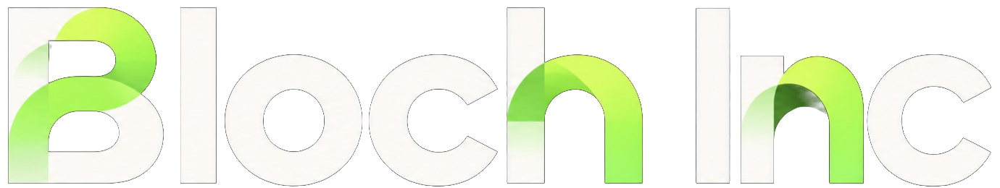

Bloch Inc
Panama / incorporation in progress

Explore the ecosystemProducts + infrastructure + research
What exists today. What comes next. An evidence-led roadmap for useful products in Latin America and global markets.
The company
One company. A connected ecosystem.
Bloch Inc is being incorporated in Panama to connect product development with the infrastructure and research supporting the broader Bloch ecosystem.
Corporate structure
Clear separation of product ownership, infrastructure services and research management.
Panama / incorporation in progress
Product vision
Organized around the actions a user needs to take: access, discover, trade, execute and transfer.
Public beta
Start with a clear view of assets and deliberate, on-device authorization for the native Bloch experience.
Open Postern Wallet ↗Deployment unverified
Compare candidate routes, costs and trust assumptions before coordinating a sequence of approvals.
Decision support / product mandateDevelopment preview
Access market interfaces, route comparison, pool discovery and liquidity mechanisms in a review-first workflow.
Explore Bloch DEX ↗Integration in progress
Build Solidity applications in the ECDSA-based L2 domain with an implemented EVM core and reproducible witness verification, toward settlement on Bloch L1.
Explore Bloch L2 ↗Qualification in progress
Move between supported domains through explicit custody, identity, backing and finality verification gates.
Explore Bloch Bridge ↗A complete public L2 node, Bloch L1 settlement and public bridge asset transfers are not enabled. DEX interfaces remain development software. Product status should be verified before use.
Bloch Protocol / infrastructure
Native network foundations, operational access and tools for the developer ecosystem.
Open Bloch Explorer ↗Genesis-4 proof of stake with ML-DSA-65 + Falcon-1024 at the native authorization boundary.
Node software, checkpoint procedures, operator guidance and validator admission tooling.
RPC access, read-only observation and Bloch Explorer for blocks, transactions, epochs and validators.
Bloch L2 execution, local EVM and Solana DevKits, technical documentation and network adapter development.
Current state / September 2026
Operating services and software previews are shown at their actual stage. A proposal is not a launch.
Genesis-4 proof of stake, node and RPC access, public chain exploration and historical transaction receipts.
View the network ↗Native Bloch authorization and browser extension. The Genesis-4 JavaScript exchange SDK is published separately.
Open the wallet ↗DEX interfaces and external EVM-chain pools are preview software. Aggregator route comparison exists in code; broad deployment is unverified.
Explore the DEX ↗Local execution and reference components exist. Complete public L2 settlement and public bridge asset transfers remain pending.
Explore L2 ↗Proposed product portfolio
The next services follow a dependency order. Existing code is identified separately from a production-qualified service.
Evidence comparison for exchanges, custodians, validators and risk teams. An offline CLI now validates checkpoint bundles; authenticated operator identity and production finality proofs remain future gates.
Build on the live historical index and published SDK toward versioned APIs, idempotent webhooks and a reproducible developer sandbox.
Gate: complete indexing, API versioning and observable availability.Policy wallet, approvals, invoices, reconciliation and finality receipts for organizations, without assuming initial custody or live payment-rail access.
Gate: hardened wallet, complete indexing and documented credit policy.Compare costs, time, custody and security boundaries before any cross-network execution. Public asset transfers wait for settlement proof and independent review.
Gate: reserve reconciliation, settlement verification and security review.Two market tracks
Start with software and evidence. Regulated activities depend on authorized institutions, legal structure and operational controls.
A software line for position reconciliation and proof of reserves before exploring asset lifecycle and coordinated settlement with partners.
Begin with observation and reconciliation; test regulated connections only through qualified local participants.
Architectural principle
Distinct authorization domains require distinct trust assumptions. A cross-chain path must be assessed end to end.
Native L1 fund movement retains the ML-DSA-65 + Falcon-1024 authorization boundary. ECDSA does not apply here.
PQBloch L2 accounts and contracts use ECDSA and retain separate security assumptions. Settlement on Bloch L1 remains in development.
EVMECDSA is confined to Bloch L2/EVM. A bridge, L2 account or wrapped asset does not automatically inherit Bloch L1's native post-quantum guarantees.
Who we are building for
Three audiences, with a shared need for clear, usable and observable infrastructure.
Individuals
Builders
Ecosystem partners
Operating principles
Evidence, accountability and clear boundaries should precede expansion.
Testing, independent review and release gates before activation.
Distinguish product ownership, infrastructure services and network control.
Define responsible operators, incident response and change approval.
Review legal and operational needs for each product and target market.
Evidence-led roadmap
Each gate requires a documented network result before the next product claim. These are priorities, not fixed launch dates.
Regular checkpoints, fresh independent node sync, reproducible releases and compared finality evidence.
Unlocks: production qualification for Verify.Complete index, versioned API, webhooks, SDK examples, monitoring and support procedures.
Unlocks: Data + Dev Cloud pilots.Treasury policies, reconciliation, documented credit rules and a controlled partner pilot.
Unlocks: Treasury + Pay evaluation.Bridge, L2, global-market and LatAm pilots with verified finality, authorized partners, audit and recovery.
Unlocks: limited, jurisdiction-specific launch decisions.Proof Ledger → partner asset lifecycle → DvP/PvP research and pilots.
Read-only rail observation → partner reconciliation → controlled regional corridors.
Progress is measured by verified capability, not by a fixed launch-date promise. The network remains open; company services are optional.
Download the complete products + roadmap presentationLet's connect what comes next